Two tenses that connect the past with the present moment. Present Perfect focuses on the result («I've done it!»), Present Perfect Continuous focuses on the process («I've been doing it for two hours»). We build each one carefully, then put them side by side and drill the difference.
Fact File about you · answer with «Have you ever…?»
A2
💎 Below are eight question cards about your life so far. Answer each in full sentences using Present Perfect — because we talk about life experience (any time up to now), news, and results we can still see.
Q: Have you ever eaten sushi? · A: Yes, I have eaten sushi twice. / No, I have never eaten sushi.
Tap a card, then say your answer out loud. Try to keep it in Present Perfect: I have + past participle (been, seen, done, eaten, gone, read, written…).
Q1
What is the strangest food you have ever tasted?
→ I have tasted ___ once / never tasted anything strange. It was ___.
Q2
How many countries have you visited in your life?
→ I have visited ___ countries so far. My favourite was ___.
Q3
Have you ever met a famous person, even for a second?
→ Yes, I have once met ___. / No, I have never met a famous person, but I would love to meet ___.
Q4
What is the hardest thing you have already done this year?
→ The hardest thing I have done this year is ___. It was hard because ___.
Q5
Have you read any books recently? Which one?
→ I have recently read ___ / I haven't read anything for ages because ___.
Q6
Have you ever lost something really important, like a phone or a pet?
→ I have lost ___ once. / I have never lost anything important — I am very careful.
Q7
What is one thing you have always dreamed of doing but haven't done yet?
→ I have always wanted to ___, but I haven't ___ yet, because ___.
Q8
Have you learnt anything new this week?
→ This week I have learnt ___. / I have already learnt three new words in English today.
👀 Notice: nearly every answer starts with «I have ___» + a past participle. That's Present Perfect.
02
Present Perfect · form & signal words
A2 → B1
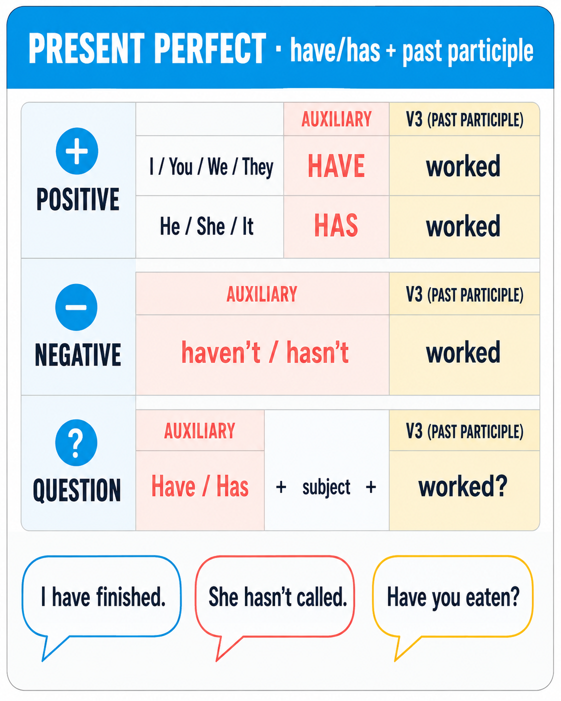
💎 Form:subject + have / has + past participle (V3).
· I / you / we / they → have · he / she / it → has
· Short forms: I've, you've, he's (= he has!), she's, we've, they've.
· Negative: haven't / hasn't + V3.
· Question: Have / Has + subject + V3 + …?
🔸 I have finished my homework. · She has just called. · Have you ever been to London?
📆 When do we use Present Perfect?
🔹 Life experience (any time up to now) — Have you ever eaten sushi? · I have never seen snow.
🔹 Recent news (something new we don't know yet) — Mum has bought a new car! · Ouch, I have cut my finger.
🔹 Result we can see now — Look! Someone has broken the window. · I have lost my keys — I can't get in.
🔹 Unfinished time period — today, this week, this year, this morning (if it's still morning) — I have written three emails today.
🔹 «How long?» with state verbs — I have known her for five years. · We have lived here since 2020.
Signal words · Present Perfect
everneveralreadyjustyetso fartodaythis weekthis yearrecentlylatelyfor + periodsince + point
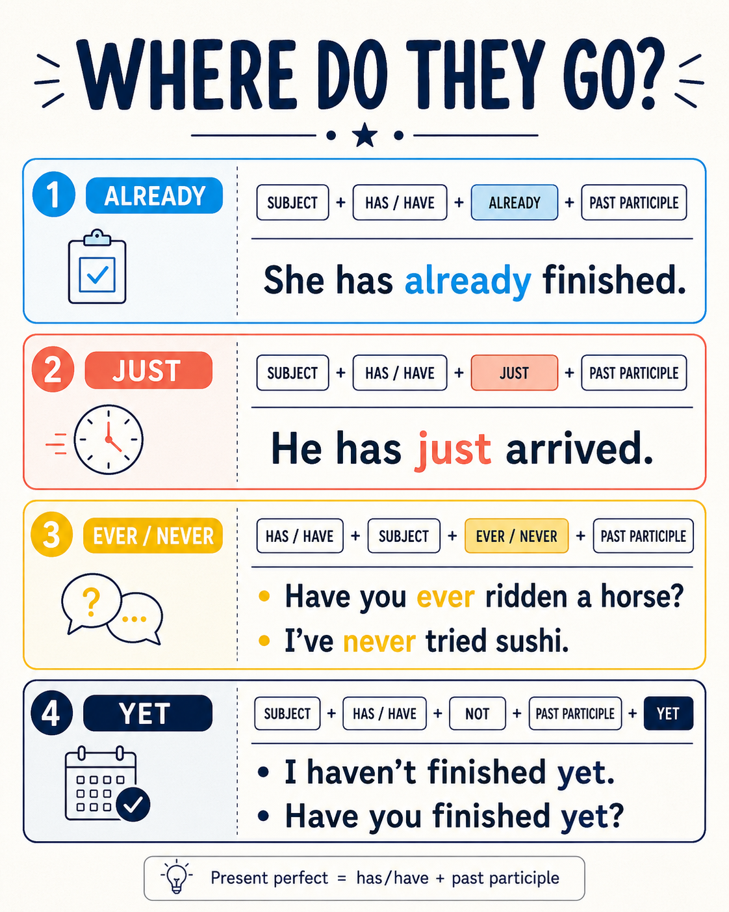
📍 Where do these signal words go?
🔸 already, just, ever, never → between have/has and V3:
· I have already eaten. · She has just arrived. · Have you ever been to Paris?
🔸 yet → at the end, only in questions & negatives:
· Have you finished yet? · I haven't done it yet.
🔸 for / since → at the end:
· I have lived here for ten years. · We have known him since 2015.
🔸 today, this week, recently, lately, so far → beginning or end:
· Today I have read two chapters. / I have read two chapters today.
Put the verb into Present Perfect. Watch the signal words!
1.I my English homework. (already / finish)
2. sushi? (you / ever / eat)
3.Sorry, Dad for work. (just / leave)
4.I Anna today. Is she at school? (not see)
5.My little brother to the sea. (never / be)
6.Katya and I each other since kindergarten. (know)
7.We in this flat for six years. (live)
8. your new story yet? (your dad / read)
9.I the maths homework yet — it's too hard! (not do)
Invent THREE Present Perfect statements about your life. TWO are true, ONE is a lie. Say them out loud with a poker face. Your partner guesses which one is fake.
Example set:
🔸 «I have ridden a horse in Kazakhstan.»
🔸 «I have eaten octopus.»
🔸 «I have met a real astronaut.» (← lie!)
🎯 Use different V3 forms — try to include at least one irregular (been, seen, eaten, ridden, met, taken, broken).
🎯 Bonus round: after the guess, add ONE Past Simple detail («Yes, it happened in 2022, in Almaty»).
03
Past Participle · the V3 map
A2
🎯 Regular verbs: base + -ed → work → worked · play → played · finish → finished.
🎯 Irregular verbs: memorise the V3 form. Below are the 20 most useful ones for your level.
🔸 «I have eaten» (V3 = eaten, not «ated»). · «I have gone» (V3 = gone, not «went»).
Base (V1)
Past (V2)
Past Participle (V3)
be
was / were
been
have
had
had
do
did
done
go
went
gone / been
see
saw
seen
eat
ate
eaten
drink
drank
drunk
write
wrote
written
read /riːd/
read /red/
read /red/
speak
spoke
spoken
take
took
taken
give
gave
given
break
broke
broken
lose
lost
lost
find
found
found
buy
bought
bought
bring
brought
brought
meet
met
met
run
ran
run
swim
swam
swum
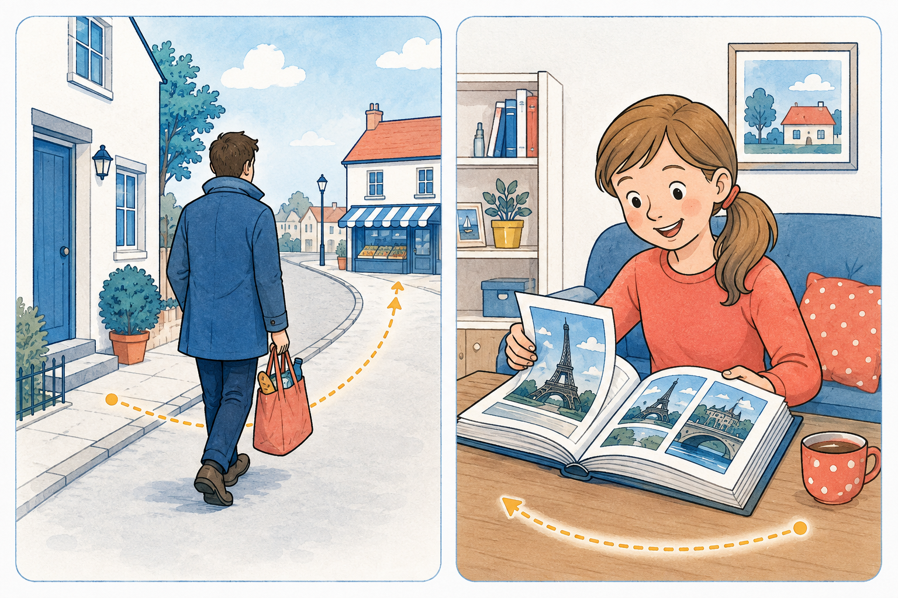
⚠️ gone vs been — a tricky pair!
🔹 gone to X = went there and is still there. Dad has gone to the shop (he is at the shop now).
🔹 been to X = went there and came back (experience). I have been to London (but I'm home now).
Write the correct V3 form (past participle):
1.I have never octopus. (eat → V3)
2.She has already to five countries this year. (be → V3)
3.Have you your water today? (drink → V3)
4.Oh no, I have my keys again! (lose → V3)
5.She has ten pages of her book today. (write → V3)
6.Look, the cat has your vase. (break → V3)
7.Dad has the dog for a walk. (take → V3)
8.I have never a famous person. (meet → V3)
9.She has five Harry Potter books. (read → V3)
10.Mum isn't here — she has to the shop. (go → V3 · she's still there)
🎤 Speaking · «V3 chain» + «been vs gone»
Part 1 · V3 chain: say a full Present Perfect sentence for each of these six irregular verbs — 3 seconds per verb:
· eaten · written · seen · drunk · broken · met Example: «I have eaten apples today.» «I have written a story this week.»
Part 2 · been vs gone: say TWO sentences about yourself using each:
· «I have been to ___ ___ times.» (experience, you came back)
· «My ___ has gone to ___.» (they're still there)
🔤
Spelling · Perfect-tense words
A2 → B1
🔤 Three mini-drills to lock in the spelling: regular -ed rules, wrong V3 spotter, and tricky Perfect words. Say each word out loud before you write.
🔤 Spelling A · regular V3 (-ed) rules
Rule 1 · most verbs: just add -ed → work → worked · play → played · visit → visited. Rule 2 · verb ends in silent -e: just add -d → like → liked · dance → danced · love → loved. Rule 3 · consonant + y: change y → ied → study → studied · cry → cried · carry → carried. Rule 4 · vowel + y: just add -ed → play → played · enjoy → enjoyed · stay → stayed. Rule 5 · short verb, one vowel + one consonant:double the consonant → stop → stopped · plan → planned · tap → tapped.
🎯 Trap: don't double after two consonants → «walked», NOT «walkked».
Write the past participle (V3). Watch the spelling rule!
1.work → I have hard today. (rule 1)
2.study → She has for two hours. (rule 3)
3.stop → It has raining! (rule 5)
4.like → I have always chocolate. (rule 2)
5.cry → The baby has all night. (rule 3)
6.play → We have chess three times. (rule 4)
7.visit → They have five cities. (rule 1)
8.plan → I have the whole trip. (rule 5)
9.dance → She has since she was five. (rule 2)
10.carry → He has the heavy bag all the way home. (rule 3)
11.enjoy → I have really this book! (rule 4)
12.finish → We have all our homework. (rule 1 · -sh keeps -ed)
🔤 Spelling B · spot the wrong past participle
Every sentence has ONE misspelled V3. Tap the wrong form. These are the top-10 traps for A2 kids — often kids invent «regular» endings for irregular verbs.
🎯 Warning signs: «-ed» stuck onto irregular verbs → «goed / eated / drinked» = ❌ · «writen / choosen / broked» = ❌
Tap the WRONG past participle in each sentence:
1.I have eated too much cake today!
Right: eaten — «eat / ate / eaten» is irregular.
2.Mum has goed to the shop.
Right: gone — «go / went / gone».
3.Sonya has writen three stories.
Right: written — double «t» before -en.
4.Vasya has broked another glass!
Right: broken — «break / broke / broken».
5.Dad has taked the dog for a walk.
Right: taken — «take / took / taken».
6.Have you drinked your water today?
Right: drunk — «drink / drank / drunk».
7.I have losed my keys again.
Right: lost — «lose / lost / lost».
8.The dog has finded the ball!
Right: found — «find / found / found».
9.She has already choosen her dress.
Right: chosen — one «o», one «s».
10.I have never meeted a famous person.
Right: met — «meet / met / met».
🔤 Spelling C · tricky Perfect words · fill the missing letters
Ten words that come up in every Perfect-tense text, and every one of them has a spelling trap. Say each word out loud slowly (breaking it into syllables) before you write.
🎯 «alREAdy» has ONE «l» — not «allready». «reCENTly» has an «s»-sound but is spelled with «c». «beCAUSE» has «-au-» in the middle.
Fill in the missing letters:
1.I have finished my homework. (al___dy · one «l»!)
2.She has moved to Kazan. (re___ntly · «c», not «s»)
3.Present Perfect uses «been + -ing». (con___uous · two «u»!)
4.I'm tired I have been running. (be___se · «-au-» in the middle)
5.I have always in myself. (bel___ve · «i» before «e»)
6.She has just a text from her mum. (re___ved · «e» before «i» after «c»)
7.Have you ever to London? (b__n · double «e»)
8.I have had a great in the summer camp. (ex___ence · «i» before «-ence»)
9.Katya is my best — I have known her for years. (fr___nd · «i» before «e»)
10.Have you the book yet? (fin___ed · just add «-ed» to «finish»)
🎤 Speaking · «Spell & say» — pronunciation drill
Say each of these tricky Perfect words three times out loud, then spell each letter without looking:
· al-REA-dy · re-CENT-ly · con-TIN-u-ous · be-CAUSE · be-LIEVE · re-CEIVED · ex-PE-ri-ence · FRIEND
🎯 Trap words: already (ONE «l»!) · believe (i-e) · received (e-i after «c») · friend (i-e). Slow down on these.
🎲
Game · Never Have I Ever · flip 20 cards
A2 → B1
🎮 How to play: tap a card to flip it. Say a full Present Perfect sentence out loud, then tap «I HAVE» or «NEVER».
· If «I HAVE» — say «I have (V3) …» and add ONE detail: when / where / with whom.
· If «NEVER» — say «I have never (V3) …» and add «but I would like to…» OR «and I never will!».
🔸 Card «gone to bed without brushing my teeth» → «I have gone to bed without brushing my teeth once, at summer camp — I was too tired.»
Goal: flip and speak on all 20 cards. Score «I HAVE» to see how much you've already lived through!
Never Have I Ever…tap → speak → answerScore · 0 / 20 «I have»
🎤 Speaking · «Confessions round-up»
After you finish all 20 cards, tell me TWO short stories out loud:
· Story 1 — one embarrassing thing you have DONE (from a card you tapped «✋ I have»). Two-three sentences: what happened, when, why it was silly.
· Story 2 — one thing you have never done and never want to. One-two sentences: which card + why «never».
🎯 Use Present Perfect for the «what happened» + Past Simple for the details («I have fallen off my chair. It was in maths class last September. Everyone laughed.»).
04
Present Perfect Continuous · form & use
B1
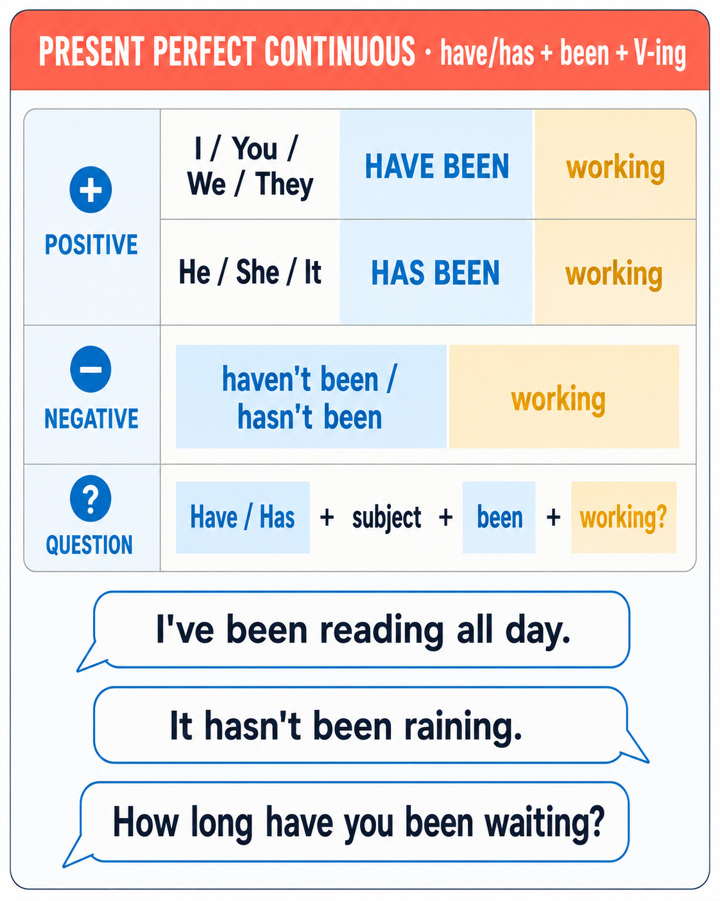
🌊 Form:subject + have / has + been + V-ing.
· I / you / we / they → have been + V-ing · he / she / it → has been + V-ing.
· Negative: haven't / hasn't been + V-ing.
· Question: Have / Has + subject + been + V-ing?
🔸 I have been reading for two hours. · She has been working since 8 a.m. · Have you been running? You look exhausted!
🌊 When do we use it?
🔹 Action from the past that is still happening now — I have been studying English for three years (and I still study).
🔹 Action that just stopped and has visible results — Your shoes are muddy! Have you been playing in the garden?
🔹 «How long?» questions about actions (not states) — How long have you been waiting?
🔹 Emphasis on the process, not the result — I have been writing this essay all evening (I might not be finished).
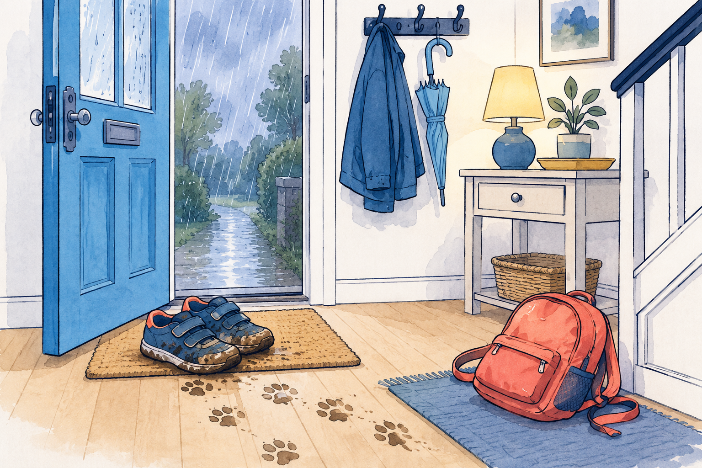
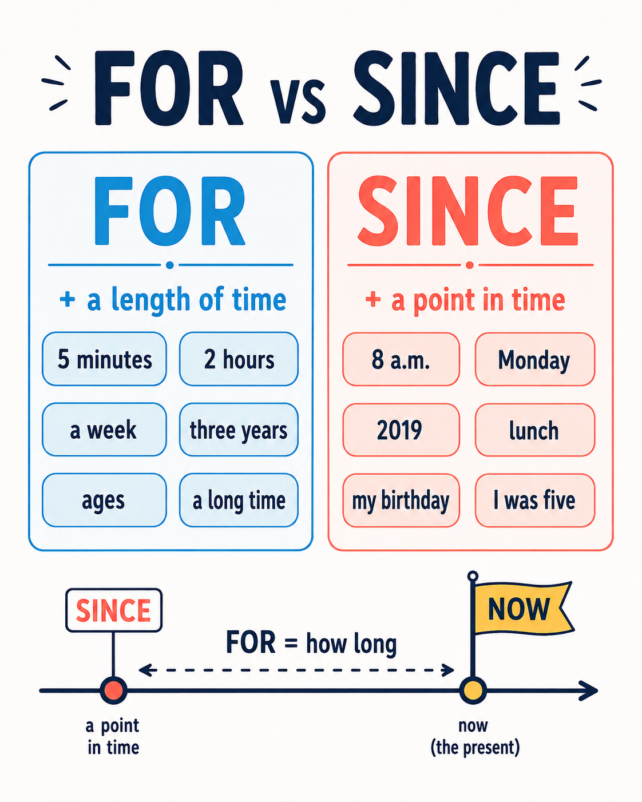
Signal words · Present Perfect Continuous
for + periodsince + pointall day / all morningthe whole weekrecentlylatelyHow long…?
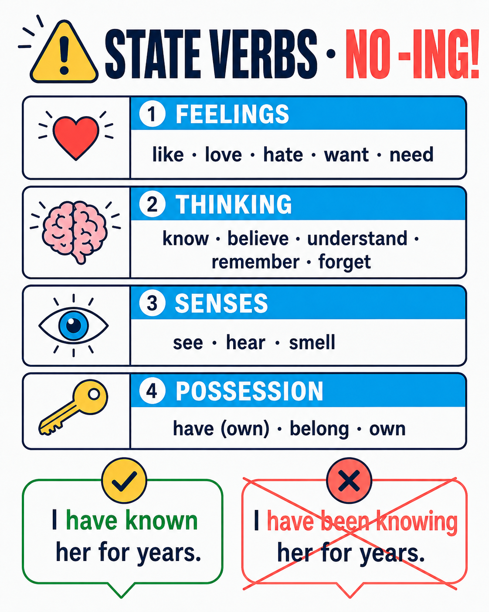
⚠️ State verbs (know, love, want, need, believe, understand, own, have=possess, belong…) do NOT take -ing.
✅ I have known her for years. · ❌ I have been knowing her for years.
✅ I have had this bike since I was 8. · ❌ I have been having this bike since I was 8.
Put the verb into Present Perfect Continuous. Watch «for / since»!
1.I for the bus for twenty minutes! (wait)
2.Look outside — it since the morning. (rain)
3.What all evening? (you / do)
4.Sonya for the test since three o'clock. (study)
5.You look tired. You well recently, have you? (not sleep)
6.My brother video games for four hours! Mum will be angry. (play)
7.I English for three years. (learn)
8. on my bed again? There is grey fur everywhere! (Muffin / sleep)
9.I this novel all week — it's really long. (read)
Your teacher (or the person opposite you) will say a silly false sentence. Your job: shout the correction using Present Perfect Continuous. Speak in full sentences!
Sample lies to correct:
🔸 «Muffin has been reading a book all afternoon.» → «No! Muffin has been sleeping all afternoon!»
🔸 «Vasya has been doing homework for five hours.» → «No! Vasya has been playing video games for five hours!»
🔸 «Sonya has been swimming in the sea this summer.» → «No, Sonya has been staying in Kazan!»
🔸 «It has been snowing since morning.» → «No, it has been raining since morning!»
🔸 «Grandma has been playing football since Monday.» → «No, Grandma has been baking honey cake!»
🎯 Every correction MUST be Present Perfect Continuous: have/has + been + V-ing.
05
Perfect vs Perfect Continuous · side by side
B1
⚖️ Same signal words («for», «since», «today»), different focus.
💎 Perfect = result, how much / how many, finished action.
🌊 Continuous = process, how long, still going on.
Focus
💎 Present Perfect
🌊 Present Perfect Continuous
Meaning
Result · what is done
Process · how long it has gone
Question
How many? How much?
How long?
Time
Finished (or unfinished, but action is complete)
Still happening OR just stopped with visible traces
Example 1
I have written three emails today. (result: three emails, done)
I have been writing emails all morning. (process: still writing, might not be finished)
Example 2
She has read two books. (finished)
She has been reading this book for a week. (still reading it)
Example 3
He has painted the wall. (finished, wall is now painted)
He has been painting the wall — that's why his hands are blue. (traces of the process)
State verbs
Yes ✅ — I have known her for years.
No ❌ — I have been knowing her.
Choose the correct tense in each sentence:
1.I three tests this week. (count = 3)
2.I this essay for two hours and I'm still not finished!
3.My brother video games since 3 p.m. — his eyes look red!
4.He five different games today. (count = 5)
5.I Katya since kindergarten. (state verb!)
6.Take an umbrella — it all morning.
7.Mum a cake — look, it is on the table! (result visible)
8.Mum — the whole flat smells amazing.
9.I five chapters. (count)
10.I this book since last Sunday.
👯 Speaking · «Twin-sentence duel» — same topic, different tense
For each topic, say TWO sentences back-to-back: one 💎 Present Perfect (result / count / finished) + one 🌊 Present Perfect Continuous (process / duration / still going).
1️⃣ reading → «I have read five books this year.» + «I have been reading the same book for two weeks.»
2️⃣ watching → «I have watched three episodes today.» + «I have been watching this show since Monday.»
3️⃣ eating → …
4️⃣ studying English → …
5️⃣ playing (a game / a sport) → …
6️⃣ cleaning your room → …
🎯 The Perfect sentence needs a count or a result. The Continuous sentence needs «for / since / all …».
5B
Present Perfect vs Past Simple · finished or unfinished time?
B1
⏳ Biggest B1 trap: choosing between Past Simple («I saw that film yesterday») and Present Perfect («I have seen that film»). The rule is short — look at the TIME:
· Finished time (yesterday, last week, in 2019, when I was 5, ago) → Past Simple.
· Unfinished / connected to now (today, this week, so far, since 2019, ever, already, just, yet) → Present Perfect.
🔸 Compare: I have written two emails today. (today is not over yet) · Yesterday I wrote five emails. (yesterday is completely finished)
Focus
💎 Present Perfect
🗓 Past Simple
Time
Unfinished period, or no time given
Finished period, exact time given
Signal words
ever · never · already · just · yet · so far · today · this week · recently · lately · for · since
yesterday · last night · last week · a week ago · in 2019 · when I was 5 · at 3 p.m.
Question type
Life experience / news / result → Have you ever…?
What happened at a specific time → When did you…?
Example 1
I have been to London. (any time up to now)
I went to London last summer. (specific finished time)
Example 2
She has just called. (recent, connected to now)
She called five minutes ago. (exact finished time)
Example 3
We have already visited three cities this month. (month not over)
We visited three cities last month. (month is over)
🎯 Killer trap: «for two years» works with BOTH — but the meaning changes!
· I have known him for two years. (and I still know him — Present Perfect)
· I knew him for two years. (and I don't any more — Past Simple, finished)
Choose the correct tense in each sentence. Watch the time marker!
1.We four museums this week — and it's only Wednesday!
2.Yesterday Sonya to the library with her mum.
3. sushi?
4.What for breakfast this morning? (morning is over — it's evening now)
5.My grandma in 1963.
6.Katya — the news is amazing!
7.Sonya the school poetry prize last May.
8.She four books this summer.
9. your homework yet?
10.Two hours ago I a huge black cat in our garden!
11.Katya and I each other since kindergarten — she is still my best friend.
12.When my dad was a child, he in Vladivostok for three years.
🎤 Speaking · «Yesterday vs Today» — say six sentences, out loud
Say THREE sentences about YESTERDAY (Past Simple, finished time): «Yesterday I woke up at ___ · Yesterday I ate ___ · Yesterday I saw ___»
Then say THREE sentences about TODAY (Present Perfect, today isn't over): «Today I have already ___ · Today I have eaten ___ · Today I have seen ___»
🎯 Trap: make sure «yesterday» sentences never use «have» and «today» sentences never use Past Simple.
5C
Time expressions matrix · which tense does each signal call for?
B1
⏰ Each of these time expressions is a signal — it forces one specific tense. Learning the matrix once saves you a hundred future mistakes.
🎯 Rule of thumb: is the time period over (finished)? → Past Simple. Is it still going or does it touch NOW? → Present Perfect (or Perfect Continuous for duration).
Signal word
Which tense?
Example
yesterday
Past Simple
I saw her yesterday.
already
Present Perfect
I have alreadyeaten.
just
Present Perfect
She has justarrived.
yet
Present Perfect (?/−)
Have you finishedyet?
ever / never
Present Perfect
I have neverbeen to Rome.
last night / week / year
Past Simple
We went to the cinema last night.
for + period
Perfect (state) / Perfect Cont (action) / Past Simple (finished)
Teacher (or your reader) will say a signal word out loud. Your job: build a full sentence about YOURSELF using that signal + the correct tense — within 5 seconds. No pauses, no «uhm».
Signals to drill:yesterday · already · two hours ago · this week · in 2020 · so far · just · last summer · since Monday · ever · when I was 6 · today · lately · never · at 8 a.m.
Example: Signal → «already». You: «I have already finished my English homework today.» ✅
Signal → «yesterday». You: «Yesterday I went for a walk with Muffin.» ✅
🎯 Aim: 10 out of 12 signals answered without a stumble. If you stumble, run the drill again.
06
Which tense fits the situation?
B1
🎯 In each situation, look for the clue — is the person telling us about a result (💎 Perfect) or a process / duration (🌊 Perfect Continuous)?
1. Anna is red in the face, out of breath, and her forehead is wet. Mum asks what she's been doing. Anna says: «I _____ in the park.»
Visible signs of the process (red face, out of breath) → Present Perfect Continuous.
2. Sonya walks out of her room, smiles and says: «I _____ all my homework — can I go play?»
The result matters — homework is DONE → Present Perfect.
3. Katya arrives late for their meeting. She sees Sonya on the bench. She asks: «I'm so sorry! _____ long?»
4. At a Japanese restaurant, Sonya's dad asks her: «_____ sushi?»
Life experience → Present Perfect with «ever».
5. Sonya introduces Katya to her mum: «Mum, this is Katya. We _____ each other since we were 5.»
«Know» is a state verb — no Continuous. State + «since» → Present Perfect.
6. The whole flat smells of vanilla. Sonya walks in and says: «Mmm, Mum _____!»
Trace of process (smell in the flat) → Perfect Continuous.
7. The teacher asks: «How many books _____ this summer?»
«How many?» = count → Perfect (not Continuous).
8. The phone rings. Sonya answers: «Sorry, Dad isn't here — he _____ for work.»
Recent news + «just» → Present Perfect.
🎭 Speaking · «Guess my scene!» — improv mini-game
Pick one situation from the 8 above secretly. Describe it out loud in 3-4 sentences — but do NOT say the answer. Your partner must guess which situation you picked.
Example (secretly picked #6 «Mum has been baking»):
«I have just walked into the kitchen. The whole flat smells amazing — like vanilla. My mouth has been watering for five minutes. I can hear the oven. Who has been doing something delicious?»
→ Partner: «Mum has been baking!»
🎯 Every scene must contain at least ONE Present Perfect AND ONE Present Perfect Continuous.
07
Match the halves · Perfect or Perfect Continuous?
B1
Some verbs (have, think, look) act as states AND actions. State meaning → Perfect. Action meaning → Perfect Continuous. Match each beginning to its natural ending.
Beginning
1. I have had
2. I have been having
3. She has been thinking
4. She has thought
5. He has been looking
6. He has looked
Ending
exhausted since the morning. (state = seem)
this bike since I was eight. (state = own)
for his keys for twenty minutes. (action)
a terrible day today — one problem after another. (action = experiencing)
of a good title for her story. (state = have opinion)
about changing schools all week. (action = mental process)
Invent SIX «Did you know that…?» facts about yourself, your family, your pets, or your school — each one using a state verb in Present Perfect. Say them out loud as if you were telling a very serious secret.
Use one state verb per fact from this list: known · had · loved · believed · understood · owned · remembered · hated
Sample facts:
🔸 «Did you know that I have known Katya since we were three years old?»
🔸 «Did you know that my grandma has had the same teapot for forty years?»
🔸 «Did you know that I have never understood maths jokes?»
🔸 «Did you know that Muffin has hated the vacuum cleaner since day one?»
🎯 State verbs → Present Perfect ONLY. No «been + -ing».
08
Reading · Sonya's summer so far
A2 → B1
Read the short text. Notice how Present Perfect tells us what Sonya has done (results) and Present Perfect Continuous tells us how she has been spending her time (process). Then decide True, False or Not stated.
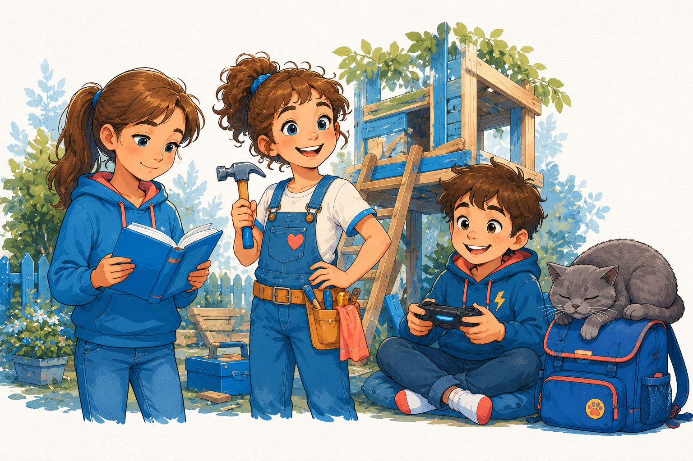
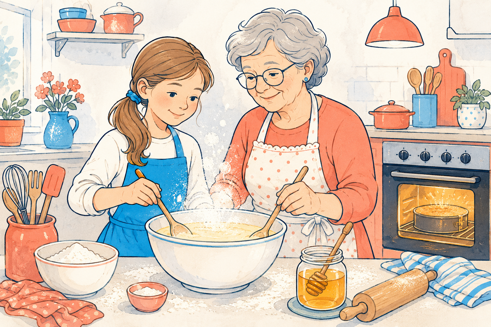
«She has been learning to bake since June.»
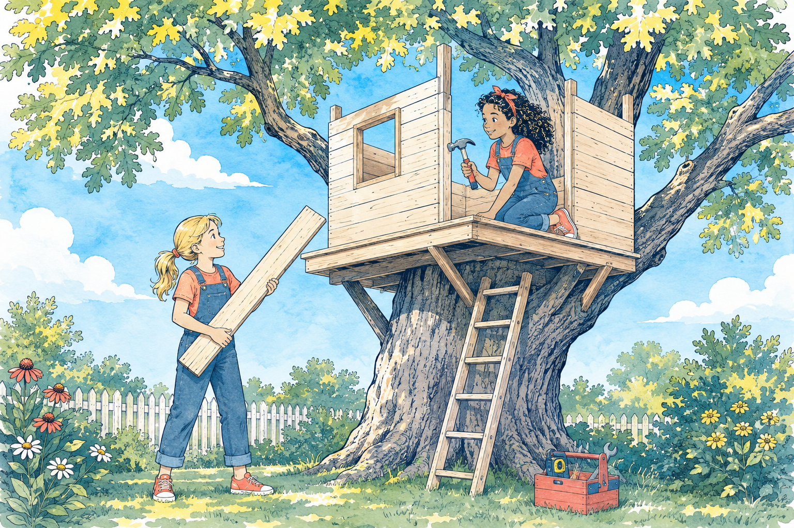
«They have been building a treehouse since August.»
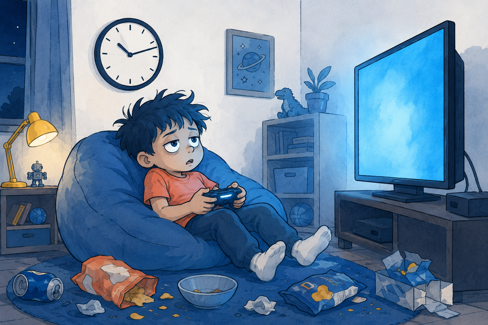
«Vasya has been playing games for hours.»
This has been an unusual summer for Sonya. Her family has stayed in Kazan the whole holiday — they haven't gone to the seaside this year because her parents have been very busy at work. Sonya isn't upset, though. She has read four books already, and she has been learning to bake since June. Her grandmother has been teaching her the family recipe for honey cake, and Sonya has already made it three times.
Her cousin Katya has been visiting almost every week. They have been building a small treehouse in the grandparents' garden since the beginning of August. It isn't finished yet — they still need a roof — but the walls are already up. The girls have been coming home muddy every evening, and Sonya's mum has been washing their clothes constantly.
Meanwhile, Sonya's little brother Vasya has been driving everyone crazy. He has broken two glasses this week. He has been playing video games for hours every day, and he hasn't read a single book yet this summer. Sonya has already told her mum twice that she doesn't want to share a room with him next term.
Choose True (T), False (F) or Not stated (NS):
1.Sonya's family has gone to the seaside this summer.
2.Sonya has read more than three books this summer.
3.Sonya has been learning to bake with her grandmother.
4.Sonya's grandmother lives in a big house next to the sea.
5.The girls have finished building the treehouse.
6.Vasya has broken two glasses this week.
7.Vasya is younger than Katya.
8.Vasya has already read a book this summer.
9.Sonya has told her mum that she doesn't want to share a room with Vasya.
10.Sonya's parents have promised to travel next summer.
📖 Speaking · «Retell Sonya's summer» — no peeking!
Close the text. Re-tell Sonya's summer to a friend in SIX sentences. You must use:
· at least THREE Present Perfect forms (results / counts) — e.g. «She has read four books.»
· at least TWO Present Perfect Continuous forms (process / duration) — e.g. «She has been learning to bake.»
· at least ONE Past Simple detail (finished time) — e.g. «Her family didn't go to the sea this year.»
🎯 Bonus: end with your personal opinion — «I think Sonya has had a good summer because ___.»
09
🎤 Your turn · speak in Perfect tenses
A2 → B1
Two short tasks — one about your experience (Present Perfect), one about your process (Present Perfect Continuous). No pressure — say a few sentences, don't rush.
1. Tell me three interesting things you have done in your life (about 60 seconds).
Use Present Perfect: I have been to ___ · I have met ___ · I have tried ___ · I have never ___ but I would love to ___. Model: «I have been to the Black Sea twice, but I have never seen a mountain. I have tried Japanese food and it was interesting.»
2. Tell me how you have been spending this week (about 60 seconds).
Use Present Perfect Continuous for what has been going on: I have been learning ___ · I have been reading ___ · I have been playing ___ · I have been watching ___ . Model: «This week I have been studying English every day. I have also been reading a fantasy book — I have already finished four chapters. I have been playing with my cat a lot too.»
Five short drills to lock in the difference: Circle the correct tense, Rewrite correctly, Complete with the right form, Choose the answer, and Find the extra word. Focus: 💎 Present Perfect ↔ 🌊 Present Perfect Continuous.
🕐 30–40 min✍️ 5 exercises🎯 A2 → B1
W1
Exercise A · choose the correct tense
B1
Read the whole sentence first, then pick the tense. Ask yourself: is this about the result (💎 Perfect) or the process / duration (🌊 Perfect Continuous)?
1.I Anna since primary school.
2.Look at the streets — it since morning.
3.She five poems this week.
4.I for two hours and I still have a lot to do.
5. Indian food?
6.Dad — he is taking off his coat.
7.Your little brother games all afternoon. Take a break, Vasya!
8.We five different cities so far.
9.She to Turkey three times.
10.My mum at the same hospital since 2010.
W2
Exercise B · tap the wrong word or form
B1
Each sentence has a wrong tense or form. Tap the wrong word — often it's using Continuous with a state verb, or using Present Simple where we need Present Perfect.
1.I am knowing Katya for many years.
Right: I have known Katya for many years. («know» = state verb + «for years» → Present Perfect)
2.I have been finishing all my homework already.
Right: I have already finished all my homework. (finished = result → Perfect)
3.Vasya have played video games for four hours!
Right: Vasya has been playing video games for four hours! (he + duration + process)
4.Did you ever eaten sushi?
Right: Have you ever eaten sushi? (experience → Present Perfect, not Past Simple)
5.She have wrote two stories this month.
Right: She has written two stories this month. (she + has; write → written, not wrote)
6.It rains since 8 o'clock this morning.
Right: It has been raining since 8 o'clock. (started in past, still going → Perfect Continuous)
7.I has been having this bike since my birthday.
Right: I have had this bike since my birthday. («have» = own = state → Perfect, and «I have», not «has»)
8.She hasn't finished her book have already.
Right: She hasn't finished her book yet. (negative → «yet», not «already»)
9.Mum have goed to the shop.
Right: Mum has gone to the shop. (she + has; go → gone, not «goed»)
10.I just have arrived — I need to sit down.
Right: I have just arrived. (word order: have + just + V3)
W3
Exercise C · complete with Present Perfect OR Perfect Continuous
B1
Put the verb into Present Perfect (result / count / state) or Present Perfect Continuous (process / duration / traces).
1.I for an hour — I'm exhausted! (swim)
2.I ten laps today. (swim)
3.My grandma in the same house since 1975. (live · «since» → Cont for action)
4. anyone from another country? (you / ever / meet)
5.Sonya to call you all morning. (try)
6.I four books this summer. (already / read · count = 4)
7.We here since eight o'clock. Where were you? (wait)
8.She her maths homework yet. (not do)
9. raining yet? I want to go outside. (it / stop)
10.Sonya her homework — she's smiling! (just / finish)
W4
Exercise D · choose the correct answer
B1
Only one option fits the meaning. Read the whole sentence and look for the clue — result, duration, state verb, or signal word.
1. Sorry, you can't speak to Dad — he _____ for work.
Result: he's gone → Present Perfect + already.
2. I'm tired! I _____ for the test for three hours.
8. I _____ the book yet — please don't tell me the ending!
Negative + «yet» → Present Perfect negative.
W5
Exercise E · find the extra word in each line
B1
Every line has one word that shouldn't be there. Tap the extra word — often an extra «to be», «do», or wrong auxiliary.
1.Have you did ever tasted Japanese food?
Right: Have you ever tasted Japanese food? (no «did» with «have»)
2.I am have already finished all my homework.
Right: I have already finished all my homework. (no «am»)
3.She has was been living in Kazan for ten years.
Right: She has been living in Kazan for ten years. (no «was»)
4.Sonya has been read four books this summer.
Right: Sonya has read four books this summer. (Perfect, not Continuous — count)
5.I haven't do done the washing up yet.
Right: I haven't done the washing up yet. (no «do»)
6.Muffin is has been sleeping on my bed all morning.
Right: Muffin has been sleeping on my bed. (no «is»)
7.I have ever never been to Moscow.
Right: I have never been to Moscow. («ever» is only for questions, not negatives)
8.Have you finished your book already yet?
Right: Have you finished your book yet? (questions/negatives → «yet», not both)
9.We have been having known each other since kindergarten.
Right: We have known each other since kindergarten. («know» is a state verb → Perfect only)
10.I have been just arrived — give me a second!
Right: I have just arrived. (no «been» — «just» + Perfect, not Continuous)
W6
Exercise F · complete the second sentence · use the word given
B1
Rewrite each idea so both sentences mean the same. Use between two and five words, including the word in CAPITAL LETTERS. Don't change the given word.
🔸 I started studying English three years ago. FOR · I have been studying English for three years.
1.I started learning English three years ago. FOR I three years.
2.Sonya finished her homework a minute ago. JUST Sonya her homework.
3.This is the first time I have tried sushi. NEVER I sushi before.
4.It's a long time since we last saw Katya. SEEN We a long time.
5.It started raining two hours ago and it hasn't stopped. RAINING It two hours.
6.I still need more time to finish the book. YET I the book yet.
7.Katya and I first met in kindergarten. KNOWN Katya and I kindergarten.
8.Vasya sat down with his console at 3 p.m. — he is still there. PLAYING Vasya since 3 p.m.
9.Mum left for the shop a moment ago. GONE Mum to the shop.
10.I finished four books this summer already. ALREADY I four books this summer.
W7
Exercise G · complete the postcard · one word in each gap
B1
Read Sonya's postcard from London. Put ONE word in each gap. Most are auxiliaries (have / has) or signal words (for / since / already / yet / just / never / so far).
Hi Katya! 💌
I been in London for a week now and I already seen so many things! Big Ben, the Tower and the British Museum — the list gets longer every day. I have been to such a big city before, so everything is really exciting.
My friend Emma been showing me around Monday. She has lived here five years and she knows the city very well.
Yesterday she took me to a tiny bookshop and I bought three books already! I still haven't tried fish and chips , but I really want to.
Every evening my legs hurt because I been walking about ten kilometres a day. But I love it! I have had such a busy holiday before.
See you soon,
Sonya 🇬🇧
W8
Exercise H · label each word · noun / verb / adjective
A2 → B1
🧩 Every word in English belongs to a word class (a part of speech). At this level you only need three:
· noun (сущ.) — a person, place, thing or idea → Sonya, book, city, love · verb (гл.) — an action or state → run, has, is, know, grumble · adjective (прил.) — describes a noun → curious, tired, beautiful, silly🎯 Trick: put «very» before it. Only adjectives work: very tired ✅ · very run ❌ · very apple ❌.
For each BOLD word, choose noun, verb or adjective:
1.Sonya has finished her homework. →
2.She has been writing her diary. →
3.The story is really interesting. →
4.Muffin has been sleeping in the chair. →
5.Vasya can be really annoying. →
6.Katya has grumbled at her brother all morning. →
7.Sonya has beautiful blue eyes. →
8.Grandma has baked a honey cake. →
9.It has been a lovely evening. →
10.I feel exhausted after the run. →
W9
Exercise I · split the sentence · Subject + Predicate + Object
A2 → B1
🧱 Every simple English sentence has three parts:
· Subject (S) — who or what does the action (a noun or pronoun)
· Predicate (P) — the verb (what the subject does or is)
· Object (O) — what the action affects (another noun)
🔸 I (S) + love (P) + apples (O).
🔸 He (S) + wears (P) + shoes (O).
🔸 I (S) + am writing (P) + a book (O). (P can be more than one word: «am writing», «has finished»)
Type each part below the sentence. If the predicate has two words (auxiliary + main verb), type them both.
1a.«I love apples.» · Subject =
1b.Predicate (verb) =
1c.Object =
2a.«He wears shoes.» · Subject =
2b.Predicate (verb) =
2c.Object =
3a.«I am writing a book.» · Subject =
3b.Predicate (verb, 2 words) =
3c.Object =
4a.«Sonya has finished her homework.» · Subject =
4b.Predicate (verb, 2 words) =
4c.Object =
5a.«Vasya has been grumbling all morning.» · Subject =
5b.Predicate (verb, 3 words) =
5c.Object / time phrase =
6a.«Muffin has broken a cup.» · Subject =
6b.Predicate (verb, 2 words) =
6c.Object =
W10
Exercise J · state verbs · Present Perfect ONLY (never Continuous)
B1
🚫 State verbs describe a situation, not an action. They stay in Present Perfect, never «been + -ing».
· Feelings: like, love, hate, want, need, prefer
· Thinking: know, believe, understand, remember, forget, mean
· Senses: see, hear, smell, taste, feel
· Possession: have (own), belong, own, contain
✅ I have known her for ten years. · ❌ I have been knowing her for ten years.
✅ My grandma has had that teapot since 1985. · ❌ My grandma has been having that teapot.
Put the state verb into Present Perfect. Watch — no «-ing»!
1.I my best friend since first grade. (know)
2.Sonya a dog since she was six. (want)
3.This house to my family for fifty years. (belong)
4.She chocolate all her life. (love)
5.I English much better this year. (understand)
6.Vasya mushrooms since he was three. (hate)
7.My grandma this teapot since her wedding. (have · own)
8.I in myself all my life. (believe)
9. a hug in the middle of a bad day? (you / ever / need)
10.Katya a lot to me. (always / mean)
W11
Exercise K · Past Simple or Present Perfect?
B1
⏳ Look at the time marker in the sentence. Finished time (yesterday, in 2019, ago, when I was 5) → Past Simple. Unfinished / connected to now (already, just, ever, today, since, for) → Present Perfect.
🔸 Yesterday I saw a film. ✅ · Today I have seen two films. ✅ · Never mix them!
Choose the correct tense:
1.Yesterday I a huge black cat in our garden.
2.I three books this month.
3.Grandma an apple pie two hours ago.
4. to Turkey?
5.Katya me five minutes ago.
6.I sushi.
7.Sonya her homework at 6 p.m. yesterday.
8.Vasya at his sister since morning.
9.My family to Kazan in 2019.
10.Katya and I each other for ten years — and we still meet every week.
W12
Exercise L · vocab focus · «grumble»
A2 → B1
📖 grumble (verb, гл.) — to complain in a low unhappy voice; RU: ворчать, бурчать. Family of forms:
· grumble — base (V1) → I grumble every morning.
· grumbles — 3rd person singular → He grumbles about his socks.
· grumbled — Past Simple (V2) → Yesterday she grumbled for an hour.
· grumbled — past participle (V3) → He has grumbled all day.
· grumbling — -ing form → He has been grumbling since we sat down.
🔸 Word class: grumble is a verb. Its noun form is a grumble («He gave a little grumble.») but you don't need that yet.
Fill each gap with the correct form of grumble:
1.Vasya every time we serve broccoli. (habit → Present Simple, 3rd person)
2.Yesterday he for a whole hour. (finished time → Past Simple)
3.He has already three times today. (Present Perfect · count = 3)
4.He has been since we sat down at the table. (Present Perfect Continuous · process)
5.Look — he is right now! (Present Continuous · at this moment)
6.Muffin doesn't — he just purrs. (Present Simple negative → base form)
7. about the weather? (you / ever + Perfect)
8.Please stop — the food is delicious! (after «stop» → V-ing gerund)
🧩 Word class check: in the sentence «Vasya has been grumbling all morning», what is «grumbling»?
Answer: it is a verb (part of Present Perfect Continuous). What is «Vasya»? Noun (proper). What is «all morning»? A time phrase (not one of our three classes — but if forced to choose, «morning» is a noun).
NEW GENERATION ENGLISH · Lesson 03 · 31 Aug 2026 · Sonya Simarzina · Present Perfect & Present Perfect Continuous